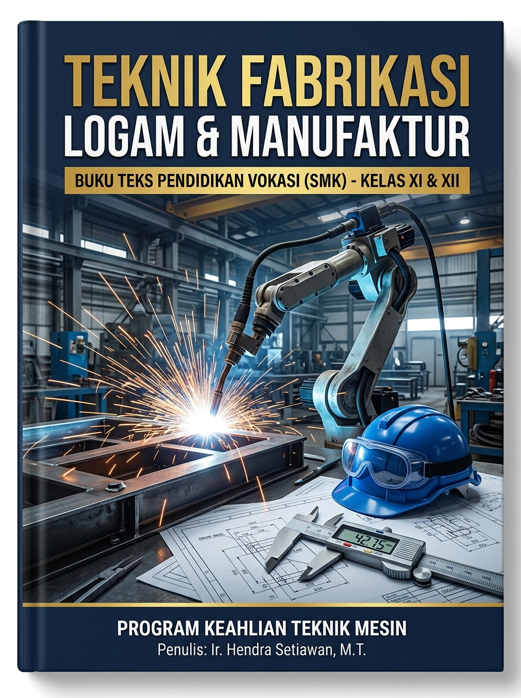
DASAR-DASAR TEKNIK PENGELASAN & FABRIKASI LOGAM
| Judul Modul | Dasar-Dasar Teknik Fabrikasi Logam dan Manufaktur (TFLM) |
| Fase / Kelas | Fase E / Kelas X SMK |
| Penyusun | Bimoro Kusumo, S.Pd (Mahasiswa PPG 2025/2026) |
| Instansi / Sekolah | SMK Negeri 2 Depok Sleman, D.I. Yogyakarta |
| Kepala Sekolah | Dodot Yuliantoro, S.Pd., M.T. (NIP. 19710714 199512 1 001) |
| Pendekatan Kurikulum | Pendekatan Deep Learning (Mindful, Meaningful, Joyful Learning) |
Kata Pengantar Kepala Sekolah
"Pendidikan kejuruan masa kini membutuhkan inovasi media pembelajaran yang mampu menjembatani teori abstrak dengan keterampilan bengkel yang konkret. Buku digital interaktif ini hadir sebagai wujud nyata implementasi Pendekatan Deep Learning di SMK Negeri 2 Depok Sleman. Kami mengapresiasi karya inovatif ini yang dirancang dengan kaya gambar, simulator real-time, dan evaluasi interaktif agar siswa tidak jenuh dan mencapai penguasaan kompetensi vokasi tingkat tinggi."
Kepala SMK Negeri 2 Depok Sleman
Kurikulum Deep Learning dirancang untuk mengatasi fenomena belajar hafalan dangkal (*surface learning*). Dalam teknik fabrikasi logam, Deep Learning memastikan setiap siswa memahami esensi ilmiah di balik setiap percikan las dan ukuran milimeter:
Mindful Learning
Berkesadaran: Siswa menyadari tujuan setiap prosedur SOP, bahaya sengatan listrik dan radiasi sinar las, serta fokus mengendalikan gerakan tangan.
Meaningful Learning
Bermakna: Menghubungkan setiap sambungan las dengan integritas kapal laut, pipa minyak bawah laut, dan keselamatan nyawa manusia.
Joyful Learning
Menggembirakan: Antusiasme belajar dipicu oleh interaktivitas kanvas simulator busur las, tantangan jangka sorong, dan visualisasi 3D.
3 Siklus Sintaks Pembelajaran Deep Learning
Alur Tujuan Pembelajaran (ATP) Fase E
Berdasarkan dokumen kurikulum CP:ATP SMK Negeri 2 Depok Sleman, kompetensi Fase E dikelompokkan ke dalam 5 elemen inti yang disajikan berurutan dalam buku ini:
| No | Elemen Pembelajaran | Capaian Pembelajaran (CP) Fase E |
|---|---|---|
| 1 | Kecakapan Kerja (Basic Job Skill) | Peserta didik mampu menerapkan disiplin kerja, SOP bengkel manufaktur, literasi gambar kerja teknik, prinsip pengukuran, penandaan, dan komunikasi efektif. |
| 2 | (K3LH) dan Budaya Kerja Industri | Peserta didik mampu menerapkan praktik K3LH, identifikasi potensi bahaya, penggunaan APD welder lengkap, prosedur darurat, serta budaya 5R (5S Kaizen). |
| 3 | Penggunaan Perkakas Bengkel | Peserta didik mampu menggunakan alat ukur presisi (jangka sorong 0.05 mm), perkakas tangan, perkakas bertenaga (mesin gerinda/bor), serta alat potong mekanik & termal. |
| 4 | Pengelasan SMAW Dasar | Peserta didik mampu memahami spesifikasi mesin las, duty cycle, polaritas, elektroda AWS A5.1, kampuh V, pengelasan 1F/1G, dan inspeksi visual cacat las ISO 17637. |
| 5 | Wawasan Dunia Kerja & Fabrikasi | Peserta didik memahami spektrum industri (baja, pipa, kapal, pesawat), otomatisasi las orbital/robotik 6-axis, jenjang karir SKKNI/BNSP, dan wirausaha (BMC). |
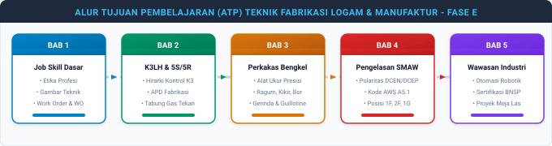
Pertanyaan Pemantik Deep Learning (Mindful Question):
Di bengkel rekayasa manufaktur modern, keterampilan fisik mengelas hanyalah 30% dari penentu keberhasilan. Sebanyak 70% lainnya ditentukan oleh kecakapan kerja dasar (basic job skill): ketelitian membaca instruksi, kepatuhan prosedur, ketepatan dimensi, dan komunikasi kerja tim.
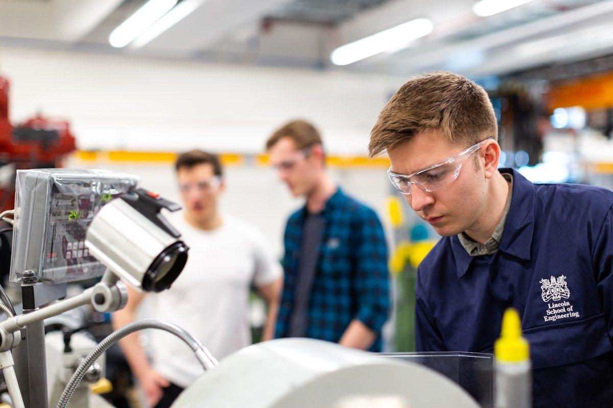
1.1 Etika Profesi & Komitmen "Zero Defect"
Filosofi industri manufaktur kelas dunia bertumpu pada prinsip Zero Defect (Nol Cacat) yang dicetuskan oleh Philip Crosby: *"Kualitas adalah pemenuhan terhadap persyaratan sejak pertama kali bekerja (doing it right the first time)"*.
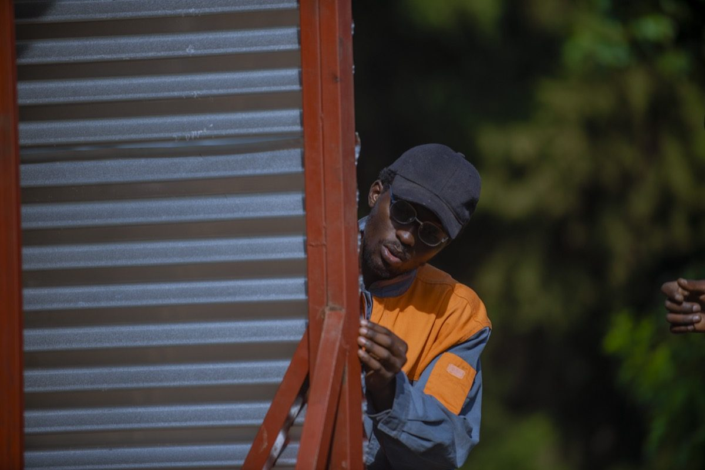
Integritas Vokasional
Jujur mengakui bila terjadi kesalahan ukuran atau kampuh las yang cacat sebelum material dirakit lebih jauh.
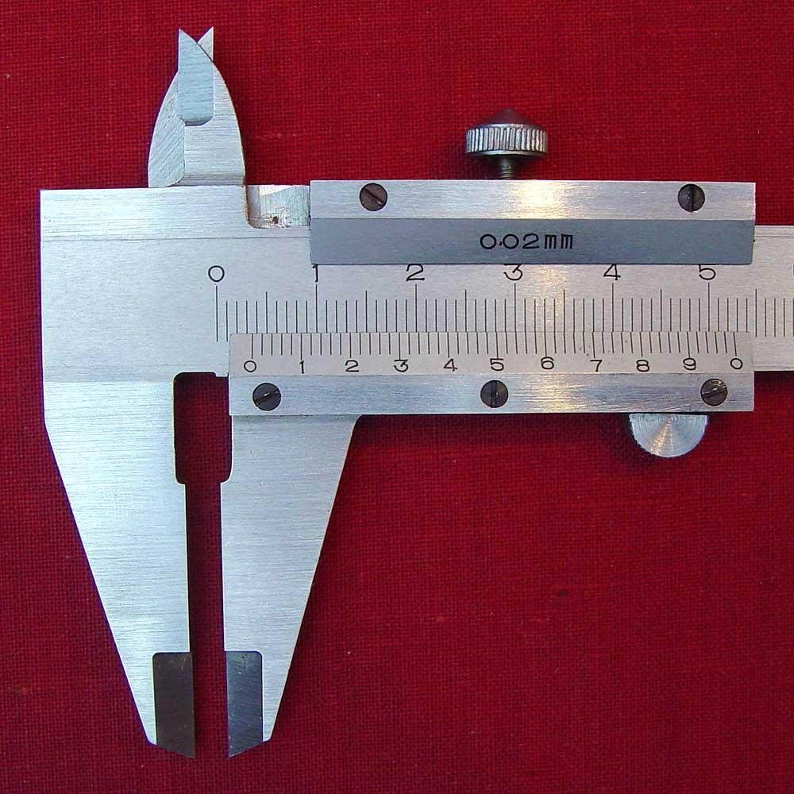
Ketelitian Presisi
Bekerja mengacu pada toleransi milimeter dan sudut derajat baku tanpa kompromi spekulatif.
5 Sikap Kerja Kunci Teknisi Manufaktur:
- Puntualitas (Punctuality): Hadir di ruang kerja sebelum briefing harian dimulai dan merapikan bengkel tepat waktu.
- Ketaatan SOP: Tidak pernah memotong jalan (*shortcut*) yang mengabaikan langkah keselamatan atau urutan pemesinan.
- Tanggung Jawab Alat: Memeriksa kebersihan dan kelayakan setiap alat sebelum dan sesudah digunakan.
- Keterbukaan Menerima Evaluasi: Menjadikan kritik pengawas mutu (*Quality Inspector*) sebagai bahan perbaikan berkelanjutan (*Kaizen*).
- Kerjasama Kolaboratif: Menyadari bahwa pekerjaan fabrikasi adalah hasil orkestrasi tim, bukan kerja individualistis.
1.2 Organisasi Bengkel Fabrikasi & Alur Komunikasi
Di bengkel fabrikasi skala menengah hingga besar, alur kerja diatur oleh struktur organisasi yang jelas agar setiap instruksi terdistribusi tanpa miskomunikasi:
| Peran Profesi | Tanggung Jawab Utama | Alat Komunikasi Kerja |
|---|---|---|
| Engineering / Drafter | Merancang konstruksi, menghitung kekuatan sambungan, dan membuat gambar detail kerja (*shop drawing*). | Software CAD/CAM, Lembar Gambar Teknik, Spesifikasi WPS. |
| Fabrikator / Fitter | Menyiapkan material, menandai garis potong (*marking*), memotong pelat, dan merakit awal (*tack weld fit-up*). | Job Sheet, Alat Ukur, Brander Potong, Mesin Gerinda. |
| Juru Las (Welder) | Melaksanakan pengelasan permanen sesuai prosedur pengelasan (*Welding Procedure Specification / WPS*). | Mesin Las SMAW/GMAW, Elektroda Bersalut, APD Lengkap. |
| Quality Inspector (QC) | Menginspeksi dimensi rakitan, memeriksa cacat las visual (VT), dan memvalidasi pengujian tak rusak (NDT). | Welding Gauge, Caliper, Dokumen Laporan Inspeksi Mutu. |
| Workshop Supervisor | Mengkoordinasikan jadwal produksi, keselamatan K3LH, ketersediaan bahan, dan penyerahan produk akhir. | Daily Progress Report, Tool Box Meeting, Izin Kerja Panas. |
1.3 Dokumen Manufaktur: Work Order, Job Sheet, & MTR
Di industri terstandarisasi, pekerjaan fisik tidak boleh dilakukan tanpa dasar dokumen legal. Berikut adalah 3 dokumen inti yang wajib dikuasai teknisi muda:
- Work Order (WO): Surat perintah resmi dari divisi manajemen yang merinci nomor pesanan konsumen, jumlah komponen yang harus dibuat, batas tanggal penyelesaian (*deadline*), dan kode pembebanan biaya.
- Job Sheet (Lembar Instruksi Kerja): Dokumen teknis operasional yang berisi panduan langkah kerja bertahap (*step-by-step*), parameter mesin yang harus diatur, alat keselamatan yang diwajibkan, dan lembar cek dimensi ukuran.
- Material Test Report (MTR / Mill Certificate): Dokumen sertifikat resmi dari pabrik peleburan baja yang menerangkan komposisi kimia material (% Karbon, Mangan, Silikon, Sulfur, Fosfor) dan sifat mekanisnya (Kuat Tarik, Kuat Luluh, Impak). Dokumen ini menentukan elektroda dan perlakuan panas yang boleh diterapkan.
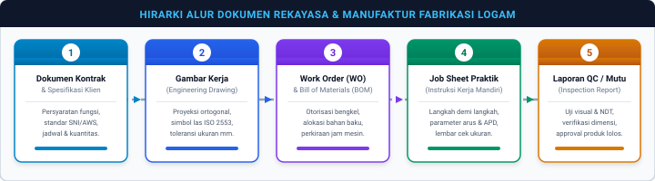
1.4 Literasi Gambar Kerja Teknik Manufaktur
Gambar kerja adalah representasi visual dua dimensi dari produk tiga dimensi. Pemahaman jenis garis dan simbol proyeksi adalah kompetensi mutlak juru fabrikasi:
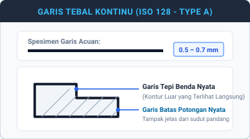
Garis Tebal Kontinu (0.5–0.7 mm)
Menyatakan garis tepi benda dan garis nyata yang terlihat langsung dari arah pandang mata.
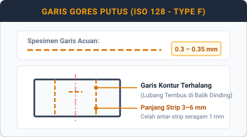
Garis Gores Putus (0.35 mm)
Menyatakan tepi atau kontur benda kerja yang terhalang di balik dinding logam lainnya.
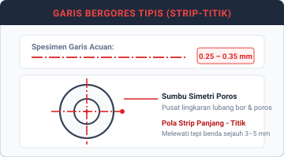
Garis Bergores Tipis (Strip-Titik)
Menandai garis sumbu simetri lubang bor, pusat lingkaran poros, dan bidang belah simetri benda kerja.
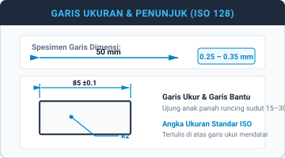
Garis Ukuran & Penunjuk
Garis tipis kontinu (0.25 mm) berujung anak panah tertutup berisi angka dimensi panjang/sudut.
1.5 Toleransi Dimensi Linear & Geometris (ISO 2768)
Dalam proses manufaktur, tidak ada ukuran yang dapat dibuat 100% tepat sempurna tanpa variasi mikroskopis. Oleh karena itu, diterapkan Toleransi, yaitu selisih antara ukuran maksimum yang diizinkan (Upper Limit) dan ukuran minimum (Lower Limit).
| Notasi Dimensi | Ukuran Nominal | Batas Atas (Max) | Batas Bawah (Min) | Nilai Toleransi |
|---|---|---|---|---|
50 ± 0.2 mm |
50.0 mm | 50.2 mm | 49.8 mm | 0.4 mm |
75 +0.15 / -0.05 mm |
75.0 mm | 75.15 mm | 74.95 mm | 0.20 mm |
120 h7 (Poros ISO) |
120.0 mm | 120.000 mm | 119.965 mm | 0.035 mm |
Simbol Kekasaran Permukaan (Surface Roughness - Ra):
Simbol centang segitiga terbalik pada permukaan gambar menunjukkan tingkat kehalusan yang diminta:
• Ra 12.5 µm: Hasil pemotongan kasar (gerinda potong atau gergaji tangan).
• Ra 3.2 µm: Hasil pengikiran rata standar bengkel atau penyerutan.
• Ra 0.8 µm: Permukaan bantalan poros hasil pengasahan presisi (*surface grinding*).
1.6 Prinsip Penandaan Pelat (Layouting & Marking)
Tahap Mengaplikasikan (Apply): Penandaan (*layouting*) adalah mentransfer ukuran dari gambar kerja ke permukaan pelat baja menggunakan peralatan gores presisi sebelum proses pemotongan:
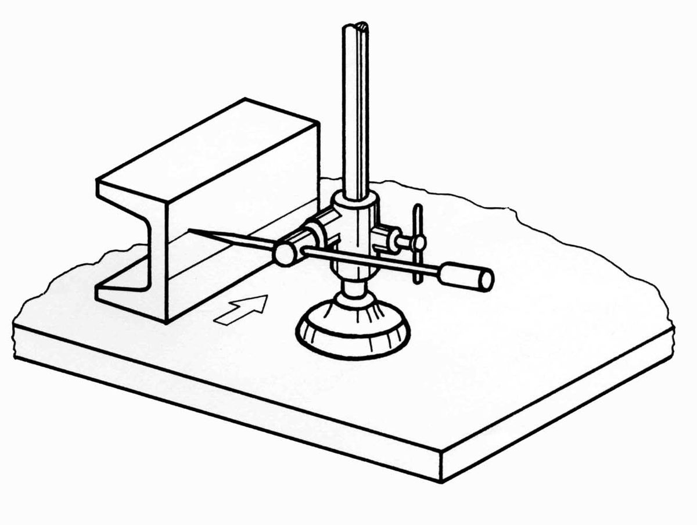
Penggores (Scriber) & Mistar Siku
Ujung baja karbida keras (HRC 60+) ditarik miring 15° menempel pada bilah mistar baja menghasilkan garis gores tajam.
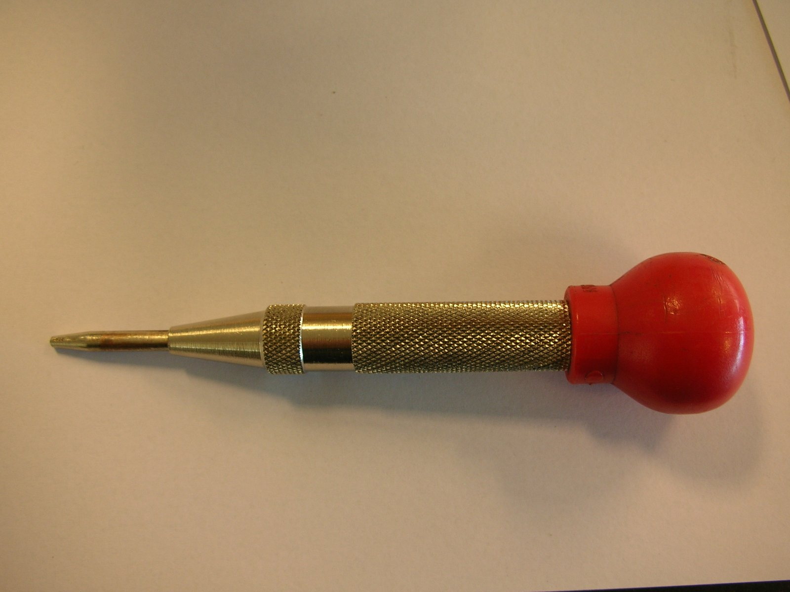
Penitik Garis (Prick) & Pusat (Center)
Sudut 60° untuk mempertegas garis gores; sudut 90° untuk memandu ujung mata bor agar tidak bergeser saat mulai mengebor.
Kalkulasi Bentangan Tekuk Pelat (Bend Allowance):
Saat pelat baja ditekuk membentuk siku 90°, lapisan serat terluar mengalami tegangan tarik (meregang), sedangkan serat terdalam mengalami tegangan tekan (memadat). Sumbu netral di tengah pelat dihitung dengan rumus:
L = A + B + [ (π / 2) × (R + K × T) ]
Dimana R = radius tekuk, T = tebal pelat, dan K = faktor sumbu netral (0,33 s.d. 0,50).
Rangkuman Pembelajaran Bab 1 (Deep Reflection)
- Kecakapan kerja dasar mengintegrasikan etos kerja disiplin tanpa kompromi, komunikasi teknis terstruktur, dan pemahaman gambar kerja.
- Gambar teknik adalah bahasa universal: pahami proyeksi ortogonal, ketebalan garis, batas toleransi linear, dan simbol kekasaran permukaan.
- Setiap tahapan kerja mengacu pada Work Order dan Job Sheet, diawali dengan briefing keselamatan Tool Box Meeting.
- Ketelitian penandaan (marking) dengan penggores dan penitik adalah penentu utama keberhasilan perakitan dan pengelasan.
🎯 Evaluasi Deep Learning: Kuis Formatif Bab 1
Kuis InteraktifPertanyaan Pemantik Deep Learning:
Keselamatan dan Kesehatan Kerja serta Lingkungan Hidup (K3LH) bukanlah sekadar daftar larangan di papan pengumuman, melainkan kesadaran pikiran (*Mindfulness*) yang tertanam menjadi refleks otomatis teknisi profesional. Di bengkel fabrikasi, keselamatan diri adalah prasyarat mutlak sebelum kompetensi lainnya dinilai.

2.1 Dasar Hukum K3 & Hirarki Pengendalian Bahaya
Landasan hukum keselamatan kerja di Indonesia bersumber pada Undang-Undang Republik Indonesia Nomor 1 Tahun 1970 tentang Keselamatan Kerja serta Permenaker No. 05 Tahun 2018 tentang Keselamatan dan Kesehatan Kerja Lingkungan Kerja.
- 1. Eliminasi: Menghilangkan total proses berbahaya (misal menghilangkan proses gouging manual berisiko tinggi dengan mesin pemotong laser).
- 2. Substitusi: Mengganti bahan toksik dengan bahan alternatif yang aman (misal mengganti cairan pembersih pelat berbasis benzena dengan pembersih berbasis air).
- 3. Rekayasa Teknik (Engineering): Memasang exhaust hood penghisap asap las (*Local Exhaust Ventilation*) langsung di atas meja las.
- 4. Pengendalian Administratif: SOP izin kerja panas (*Hot Work Permit*), rotasi kerja juru las, rambu peringatan, dan briefing Tool Box.
- 5. Alat Pelindung Diri (APD): Memasang helm, apron kulit, sarung tangan, respirator, dan sepatu pengaman pada tubuh juru las.
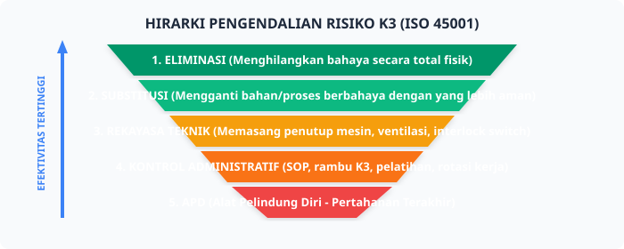
2.2 Alat Pelindung Diri (APD) Welder Interaktif
Eksplorasi berkesadaran (Mindful Learning): Klik setiap tombol APD di bawah ini untuk menginspeksi fungsi perlindungan, standar industri, serta bahaya fatal yang dapat dicegah:
Topeng / Helm Las Otomatis (Auto-Darkening Helmet)
Melindungi mata, wajah, dan leher dari radiasi sinar ultraviolet (UV) dan inframerah (IR), serta percikan terak panas. Menggunakan filter optik otomatis beralih dari keadaan terang ke gelap (DIN 9-13) dalam hitungan seperseribu detik.
2.3 Spesifikasi APD Pelindung Pernapasan & Kaki
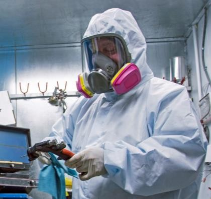
Respirator Fumes (P100 / FFP2)
Menyaring uap logam beracun (mangan, kromium heksavalen, seng) yang memicu demam uap logam (*Metal Fume Fever*).
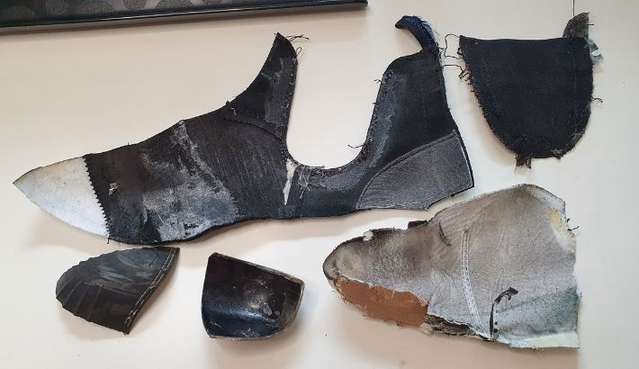
Safety Shoes Baja (SNI 7079)
Mampu menahan benturan pelat baja seberat 20 kg dari ketinggian 1 meter (energi impak 200 Joule) dan isolasi panas sol.
Bahaya Kebisingan & Perlindungan Pendengaran:
Pekerjaan penyiapan fabrikasi seperti menggerinda pelat tebal, memukul terak dengan palu baja, dan memotong dengan mesin guillotine menghasilkan tingkat kebisingan 90 dB hingga 105 dB. Sesuai Permenaker, Nilai Ambang Batas (NAB) kebisingan tanpa pelindung untuk 8 jam kerja adalah 85 dB. Oleh karena itu, penggunaan Ear Plug (NRR 25–30 dB) atau Ear Muff wajib dipakai untuk mencegah tuli saraf permanen (*Noise-Induced Hearing Loss*).
2.4 Analisis Bahaya Fisik: Sengatan Listrik & Radiasi Sinar
Pengelasan busur listrik melibatkan tegangan sirkuit terbuka (Open Circuit Voltage / OCV) sebesar 50 Volt hingga 90 Volt. Pada kondisi tangan basah oleh keringat atau lantai bengkel lembab, tegangan serendah 50V sudah cukup mengalirkan arus mematikan (>50 mA) melalui jantung yang mengakibatkan *ventricular fibrillation* (kematian akibat sengatan listrik).
| Jenis Bahaya Fisik | Dampak Patologis Tubuh | Tindakan Pencegahan Prosedural |
|---|---|---|
| Tegangan Sirkuit Terbuka (OCV) | Sengatan listrik fatal, kejang otot, luka bakar dalam tubuh. | Gunakan sarung tangan kering, alas karet isolator, matikan mesin saat mengganti elektroda di ruang sempit. |
| Radiasi Ultraviolet (UV) | "Arc Eye" (kornea mata terasa berpasir dan sangat perih), kanker kulit. | Gunakan kaca filter DIN 10–12 dan tabir pembatas las (*welding curtain*) agar rekan sekitarnya terlindung. |
| Radiasi Inframerah (IR) | Luka bakar panas pada retina mata, kekeruhan lensa (katarak). | Helm las menutupi seluruh wajah dan leher, lensa tahan radiasi panas tinggi. |
| Percikan Terak Panas (Spatter) | Luka bakar kulit tembus, pakaian terbakar, kebutaan mata. | Pakaian kerja bahan katun tebal/kulit tanpa lipatan saku terbuka, celana menutupi sepatu. |
2.5 Keselamatan Penanganan Tabung Gas Bertekanan
Tabung gas silinder menyimpan fluida gas pada tekanan luar biasa tinggi (mencapai 150–200 bar atau 2.200 psi). Jika katup leher tabung patah akibat terjatuh, tabung tersebut dapat meluncur laksana roket tak terkendali menembus dinding beton bengkel.
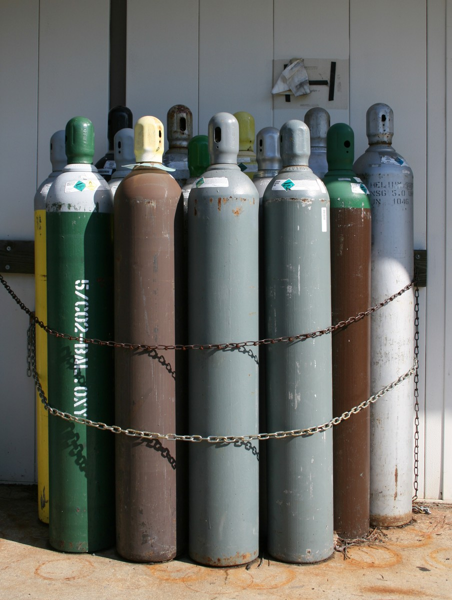
SOP Penyimpanan Tabung
Wajib diberdirikan tegak dan dirantai kuat pada troli/dinding. Tutup pelindung katup (*cylinder cap*) wajib terpasang saat tidak digunakan.
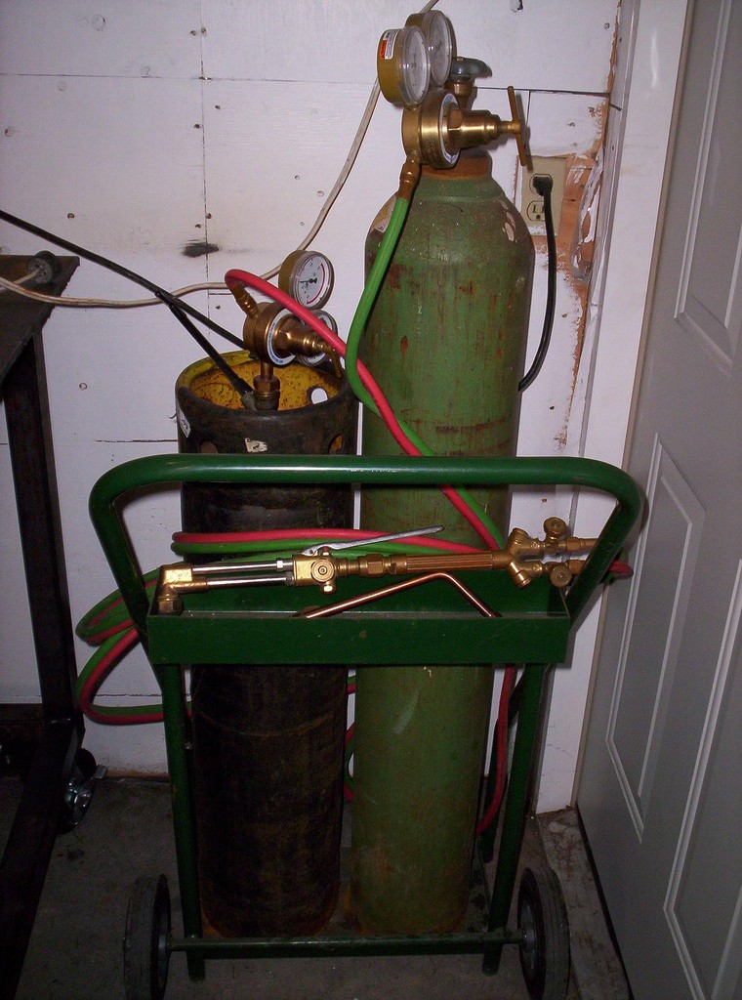
Pemisahan Jarak Tabung
Tabung bahan bakar (Asetilin/LPG) wajib berjarak minimal 6 meter dari tabung zat pengoksidasi (Oksigen) jika tidak ada dinding tahan api.
2.6 Budaya 5R (5S Kaizen) & Klasifikasi APAR
Penerapan budaya 5R (Ringkas, Rapi, Resik, Rawat, Rajin) adalah fondasi pencegahan kecelakaan di bengkel fabrikasi. Klik kartu di bawah untuk melihat rincian aksi nyata:
Ringkas (Seiri) - Pemilahan Nyata di Bengkel
Memilah benda yang benar-benar diperlukan dari benda yang sudah tidak terpakai. Contoh: Singkirkan potongan pelat bekas (scrap), sisa puntung elektroda las di bawah 50mm, dan perkakas rusak ke dalam kotak penampungan khusus atau label merah (Red Tag).
Klasifikasi Kebakaran & Pemilihan APAR:
- Kelas A (Benda Padat): Kayu, kain, kertas → Gunakan Air bertekanan atau Bubuk Kimia Kering (Dry Chemical).
- Kelas B (Cairan Mudah Terbakar): Oli, solar, thinner → Gunakan Busa (Foam) atau CO2. Dilarang menggunakan air!
- Kelas C (Peralatan Listrik Bertegangan): Panel kontrol mesin, transformator las → Gunakan Gas CO2 atau Dry Chemical non-konduktif.
- Kelas D (Logam Mudah Terbakar): Serbuk magnesium, titanium → Gunakan Bubuk Kering Khusus Logam (Special Dry Powder).
Rangkuman Pembelajaran Bab 2 (Refleksi K3LH)
- K3LH adalah komitmen moral dan hukum tertinggi untuk menjamin setiap pekerja pulang dalam keadaan sehat dan selamat.
- Pengendalian bahaya mengikuti 5 tingkat hierarki: Eliminasi, Substitusi, Rekayasa Teknik, Administratif, dan APD.
- Gunakan APD welder bersertifikasi: Helm auto-darkening shade 9-13, sarung tangan kulit, apron tahan percikan, sepatu baja 200J, dan respirator fume.
- Waspadai bahaya fatal sengatan listrik OCV, penyakit radiasi Arc Eye, ledakan tabung gas bertekanan tinggi, serta kebakaran kelas A, B, C, D.
- Budaya 5R (Ringkas, Rapi, Resik, Rawat, Rajin) meniadakan pemborosan dan menciptakan bengkel kelas dunia yang aman.
🎯 Evaluasi Deep Learning: Kuis Formatif Bab 2
Kuis Interaktif3.1 Klasifikasi Perkakas Bengkel Fabrikasi Logam
Tahap Memahami (Understand): Dalam pekerjaan fabrikasi logam dan manufaktur, perkakas bengkel dikelompokkan berdasarkan fungsi operasionalnya menjadi 4 kategori utama:
Perkakas Ukur & Uji Presisi
Mistar baja, roll meter, busur bilah, jangka sorong (0,05 mm & 0,02 mm), mikrometer luar (0,01 mm), dan pengukur dimensi las (welding gauge).
Perkakas Penanda & Pelukis
Penggores baja karbida (scriber), penitik garis 60°, penitik pusat 90° (center punch), jangka tusuk (dividers), dan kapur las tahan api (soapstone).
Perkakas Tangan Manual (Hand Tools)
Ragum bangku meja, kikir baja berbagai penampang & kekasaran, gergaji tangan (hacksaw), pahat dingin (cold chisel), palu konde, dan palu terak (chipping hammer).
Perkakas Tenaga & Mesin Bengkel (Power Tools)
Mesin gerinda tangan sudut 4" & 7", mesin bor duduk vertikal, mesin gerinda duduk (bench grinder), serta mesin potong pelat mekanik (guillotine shear).
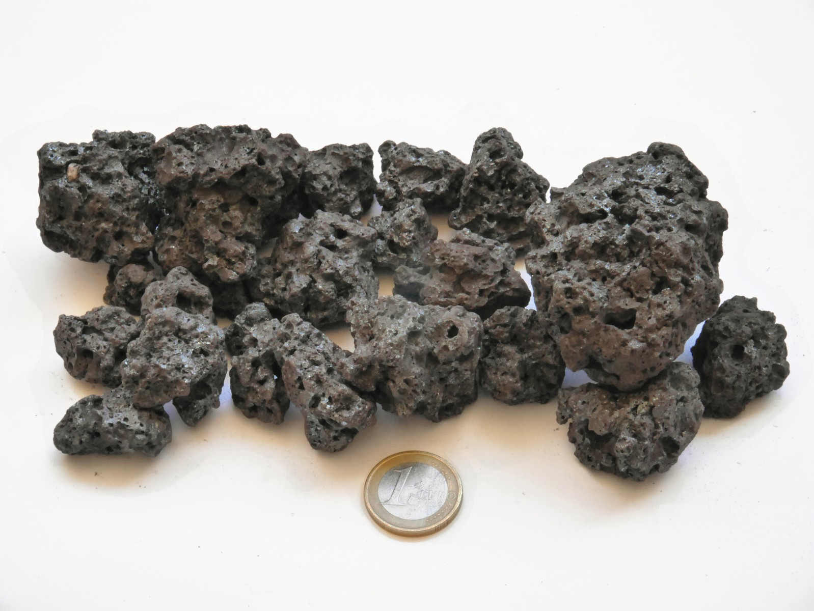
Perkakas Ukur Linier
Mistar baja presisi dengan graduasi metrik milimeter dan setengah milimeter.

Perkakas Penjepit Ragum
Ragum bangku besi cor berkekuatan jepit tinggi dengan rahang baja keras bergerigi.
3.2 Perkakas Ukur Linier, Sudut, dan Verifikasi Kerataan
Tahap Memahami (Understand): Pengukuran awal adalah fondasi fabrikasi. Ketepatan pemotongan pelat sangat bergantung pada pemilihan alat ukur yang tepat:
| Nama Alat | Tingkat Ketelitian | Aplikasi di Bengkel Fabrikasi | Standar Perawatan |
|---|---|---|---|
| Mistar Baja (Steel Rule) | 0,5 mm s.d. 1,0 mm | Mengukur dimensi panjang/lebar pelat baja di bawah 1000 mm serta memandu tarikan penggores. | Jangan dijadikan obeng/pencungkil; lapisi oli tipis pencegah karat. |
| Roll Meter (Measuring Tape) | 1,0 mm | Pengukuran bentangan panjang profil balok H, IWF, siku, dan pelat kapal di atas 1 meter. | Jaga pegas penarik dari kotoran debu gerinda; periksa kelonggaran ujung kancing kait (rivet hook). |
| Mistar Siku (Engineer's Square) | Toleransi sudut 90° ±0,02 mm | Memeriksa kesikuan sudut 90° sambungan fabrikasi dan datum penandaan pelat. | Hindari benturan jatuh yang dapat mengubah kesikuan sudut blade terhadap stock. |
| Busur Bilah (Bevel Protractor) | 1° (Standar) / 5' (Vernier) | Mengukur dan memverifikasi sudut kampuh las (bevel angle 30°, 45°, 60°). | Kencangkan baut pengunci putaran sebelum membaca garis busur. |
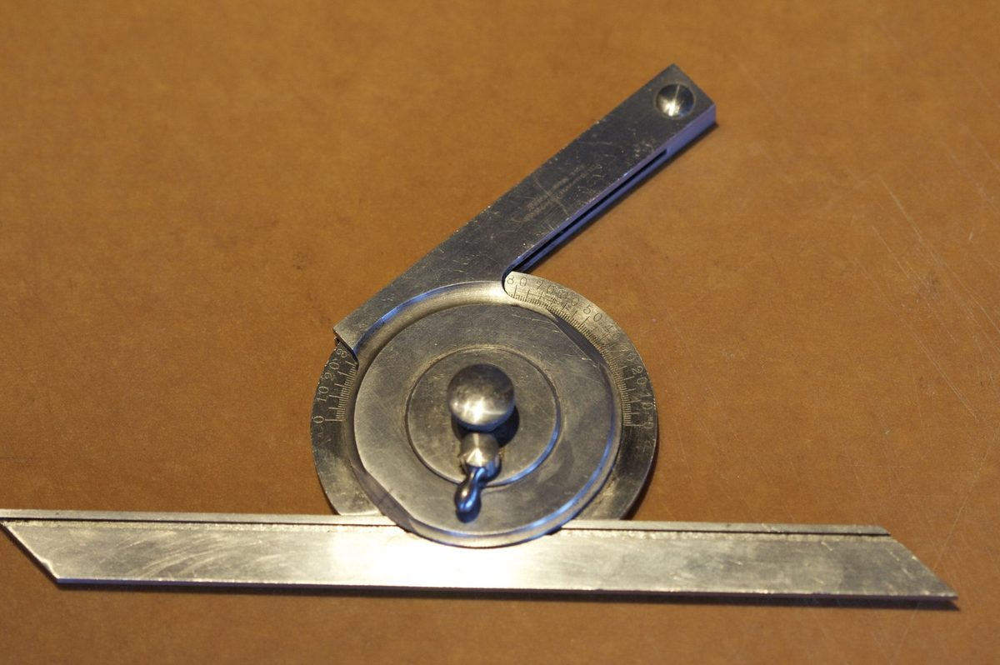
Busur Derajat Bilah (Bevel Protractor)
Mengukur sudut kemiringan bevel kampuh V tunggal 30° dengan bilah geser baja.
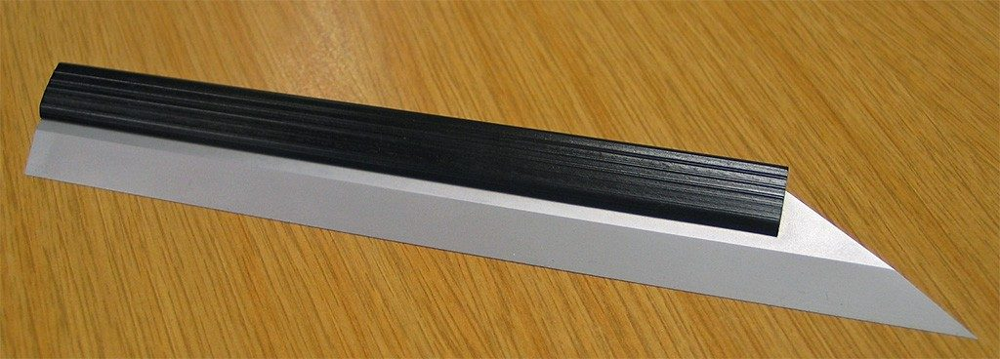
Verifikasi Kerataan (Light-Gap Test)
Mistar perata ditempelkan tegak lurus pada pelat. Celah cahaya menunjukkan ketidakrataan.
3.3 Jangka Sorong (Vernier Caliper) Ketelitian 0,05 mm & 0,02 mm
Tahap Memahami (Understand): Jangka sorong adalah alat ukur presisi multifungsi yang mampu melakukan 3 jenis pengukuran: dimensi luar (rahang bawah), dimensi dalam (rahang atas), dan kedalaman lubang (ekor pengukur / depth bar).
Anatomi Jangka Sorong Metrik
Rahang tetap, rahang geser, baut pengunci, skala utama (mm), skala nonius/vernier, dan pengukur kedalaman.

Prinsip Nonius 1/20 (0,05 mm)
Panjang 19 mm pada skala utama dibagi menjadi 20 bagian sama besar pada skala nonius (19/20 = 0,95 mm per strip).
Prinsip Matematis & Rumus Pembacaan Nilai Ukur:
Selisih 1 strip skala utama (1 mm) dengan 1 strip skala nonius (0,95 mm) menghasilkan ketelitian alat:
Ketelitian = 1 mm - 0,95 mm = 0,05 mm (atau 1/20 mm).
Rumus Total Hasil Pembacaan:
Hasil Ukur = Nilai Skala Utama (mm) + (Garis Nonius Segaris × 0,05 mm)
3.4 Laboratorium Virtual: Simulator Jangka Sorong Interaktif
Tahap Mengaplikasikan (Apply): Geser slider rahang jangka sorong di bawah ini untuk mengamati pergerakan skala nonius 0,05 mm secara langsung pada kanvas presisi:
🔬 Simulator Vernier Caliper 0.05 mm
Presisi Kanvas 2DDosen/Instruktur meminta Anda menyiapkan pelat penyambung berketebalan 28,65 mm. Geser slider hingga angka tersebut tepat tercapai. Perhatikan strip nonius ke berapa yang segaris lurus dengan skala utama!
3.5 Mikrometer Luar (0,01 mm) dan Pengukur Las (Welding Gauge)
Tahap Memahami & Mengaplikasikan (Understand & Apply): Pekerjaan pengelasan bejana tekan dan pipa migas menuntut instrumen dengan toleransi lebih halus serta alat ukur geometri rigi las khusus:
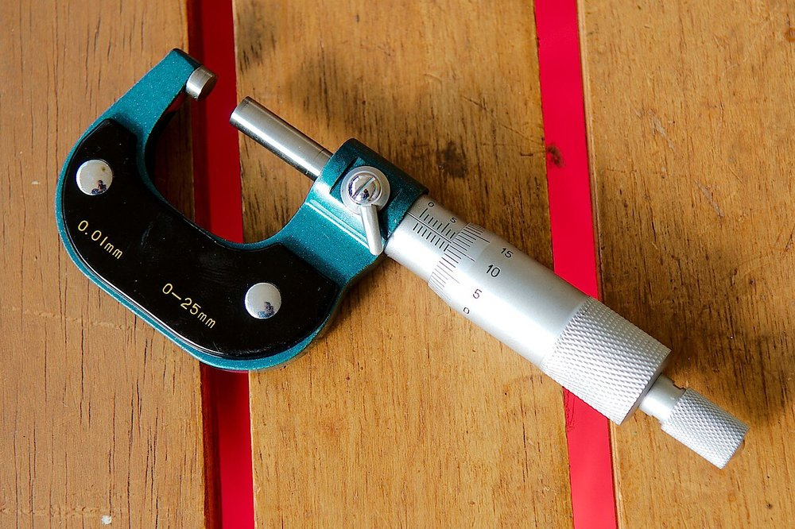
Mikrometer Luar (Outside Micrometer)
Ketelitian 0,01 mm. Ulir presisi pit 0,5 mm dengan tabung putar (thimble) 50 bagian pembagian skala.
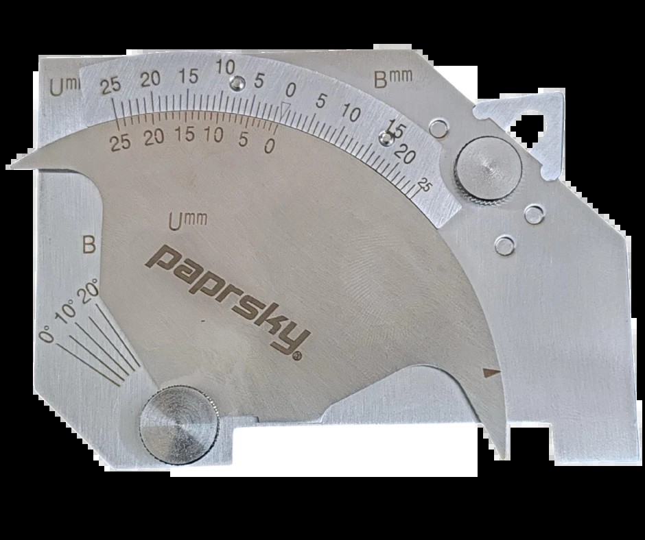
Welding Gauge (Bridge Cam Gauge)
Mengukur tinggi mahkota (reinforcement), ukuran leher las (throat thickness), dan kedalaman undercut.
Prosedur Menggunakan Mikrometer Luar:
- Pembersihan Anvil & Spindle: Bersihkan kedua permukaan ukur karbida dengan kertas bersih sebelum pengetesan titik nol.
- Penyetelan Titik Nol (Zero Adjustment): Putar raset (ratchet stop) perlahan hingga berbunyi 'klik' 2–3 kali. Garis nol silinder tetap harus sejajar persis dengan garis nol tabung putar.
- Membaca Skala: Nilai skala utama laras (tabung tetap) dalam milimeter dan setengah milimeter, ditambah garis tabung putar dikalikan 0,01 mm.
Fungsi Kritis Bridge Cam Gauge pada Inspeksi Sambungan Las:
| Fitur Bilah Gauge | Objek Pemeriksaan | Batas Keberterimaan (Acceptance Criteria) |
|---|---|---|
| Bilah Sudut Bevel | Sudut olahan kampuh V pelat baja | 60° ± 5° (sesuai WPS) |
| Jarum Pengukur Mahkota | Tinggi cembung rigi las (reinforcement) | Maksimal 2,0 mm s.d. 3,0 mm (tidak boleh rata cekung) |
| Pengukur Kaki Las (Leg Length) | Panjang kaki sambungan sudut (fillet joint) | Sesuai tebal pelat tertipis (leg length = t) |
| Jarum Cekungan (Undercut Point) | Kedalaman cacat parit termakan di tepi logam | Maksimal 0,5 mm (kritis > 0,8 mm harus ditolak) |
3.6 Ragum Bangku (Bench Vice) & Kikir Baja Fabrikasi
Tahap Memahami & Mengaplikasikan (Understand & Apply): Mengikir adalah kompetensi pembentukan dasar untuk meratakan permukaan, menumpulkan tepi tajam pelat (deburring), dan membuat sudut bevel kampuh las secara manual:
Pencekaman Benda Kerja pada Ragum
Tinggi ragum diatur setinggi siku teknisi berdiri. Pelat tipis dijepit dengan pelapis rahang lunak (tembaga/aluminium).
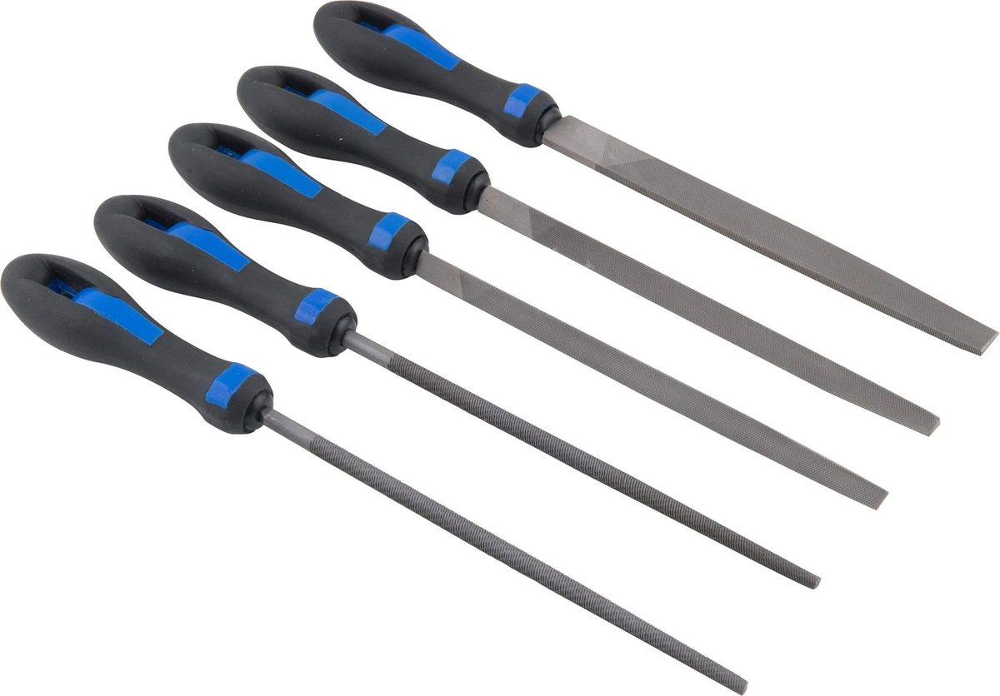
Klasifikasi Bentuk Penampang Kikir
Kikir pelat (pipih), kikir setengah bulat, kikir bulat, kikir bujur sangkar, dan kikir segitiga sudut 60°.
Kekasaran Gigi Kikir (Spacing of Teeth):
| Tingkat Kekasaran | Jumlah Gigi per cm | Fungsi Pengerjaan |
|---|---|---|
| Kikir Kasar (Bastard) | 10 s.d. 14 gigi/cm | Pemakanan material volume besar secara cepat pada benda awal mentah (roughing). |
| Kikir Sedang (Second Cut) | 16 s.d. 24 gigi/cm | Mendekati ukuran akhir gambar kerja dengan toleransi ukuran sedang. |
| Kikir Halus (Smooth) | 28 s.d. 40 gigi/cm | Penyelesaian akhir (finishing) permukaan untuk menghasilkan bidang halus rata tanpa goresan kasar. |
- Dilarang keras memakai kikir tanpa tangkai kayu/plastik pengaman; ujung ekor lancip (tang) dapat menusuk telapak tangan bila kikir terpental.
- Tekanan hanya diberikan saat kikir didorong maju; saat ditarik mundur kikir diangkat ringan agar puncak gigi kikir tidak cepat tumpul.
- Jika serbuk logam menyumbat gigi kikir (pinning), bersihkan dengan sikat kikir kawat searah kemiringan alur gigi.
3.7 Gergaji Tangan (Hacksaw) & Pahat Dingin (Cold Chisel)
Tahap Memahami & Mengaplikasikan (Understand & Apply): Pemotongan manual digunakan ketika pemotongan termal tidak diperbolehkan akibat sensitivitas panas struktur atau pada penyiapan spesimen uji tarik las:
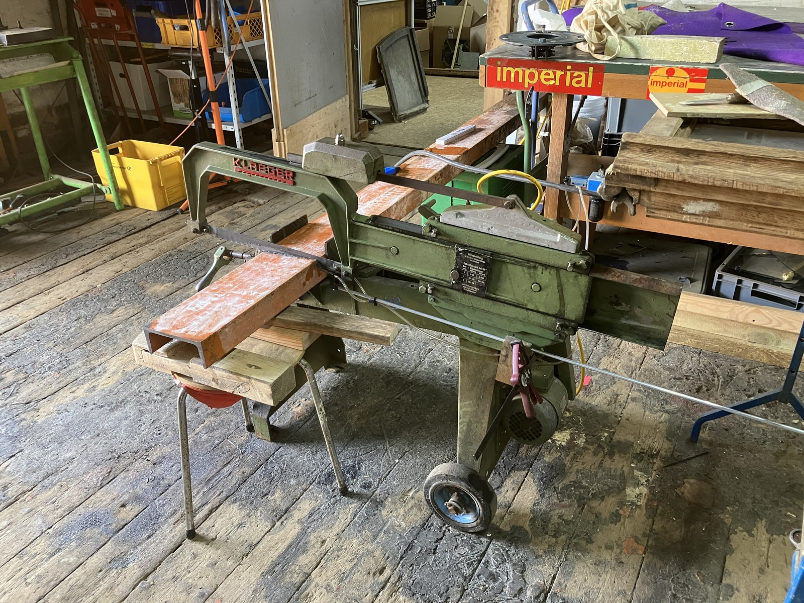
Gergaji Tangan Besi (Hacksaw)
Bilah baja berkecepatan tinggi (HSS) terpasang dengan arah gigi menghadap ke depan menjauhi pegangan tangan.
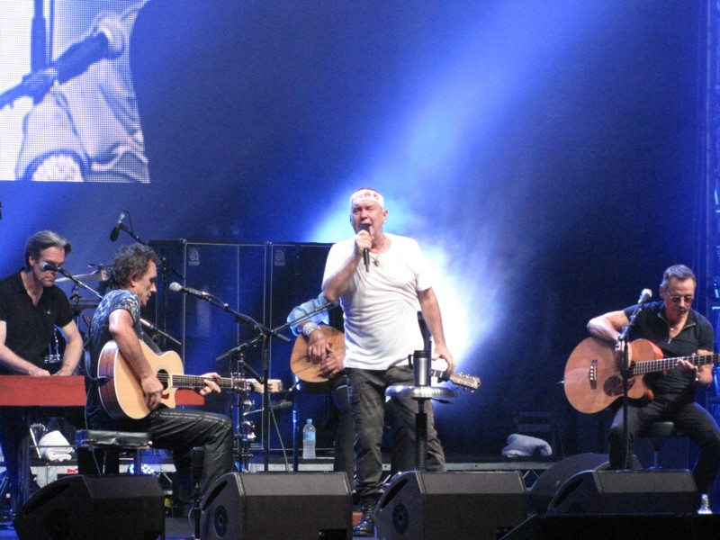
Pahat Dingin (Cold Chisel)
Mata potong baja perkakas karbon dengan sudut baji 60° khusus untuk memotong pelat baja lunak dan membersihkan terak.
Ketentuan Pemilihan Jumlah Gigi Daun Gergaji (Teeth Per Inch / TPI):
Kaidah emas penggergajian: Minimal 2 s.d. 3 gigi gergaji harus selalu bersentuhan langsung dengan ketebalan benda kerja agar gigi gergaji tidak tersangkut dan patah:
| Spesifikasi TPI | Jarak Antar Gigi (Pitch) | Material Sasaran Pemotongan |
|---|---|---|
| 14 TPI | 1,8 mm | Baja lunak pejal berdimensi tebal > 25 mm, besi cor, dan balok aluminium padat. |
| 18 TPI | 1,4 mm | Baja struktural profil pejal ketebalan sedang 6 mm s.d. 25 mm (standar umum bengkel). |
| 24 TPI | 1,0 mm | Pipa baja saluran berdiameter sedang dan pelat dengan ketebalan 3 mm s.d. 6 mm. |
| 32 TPI | 0,8 mm | Pipa dinding tipis (conduit), pelat logam tipis di bawah 3 mm, dan saluran seng lembaran. |
3.8 Mesin Gerinda Tangan Sudut (Angle Grinder) & Keselamatan Operasi
Tahap Memahami & Mengaplikasikan (Understand & Apply): Gerinda tangan 4" adalah alat paling sering digunakan juru las untuk membersihkan akar las (back gouging), memotong profil baja, dan membuat bevel kampuh:
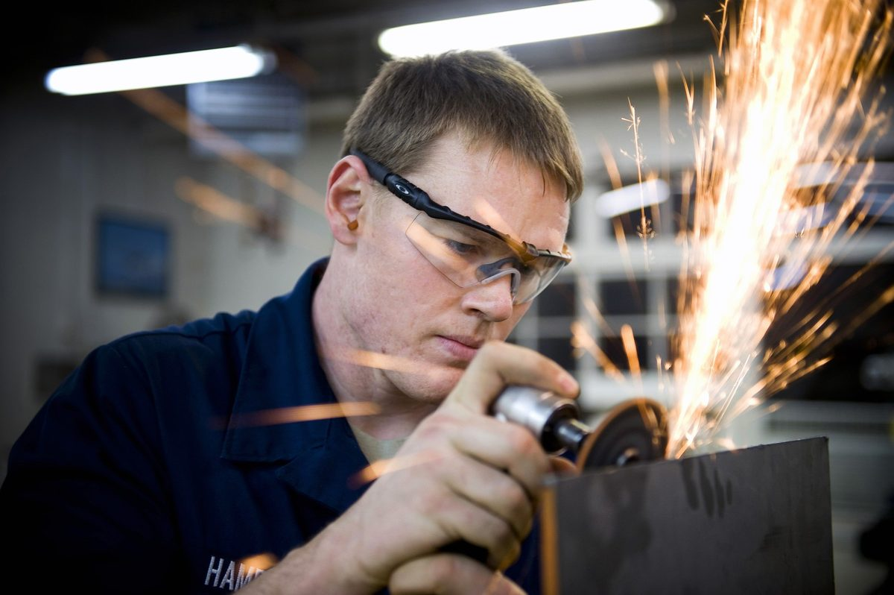
Anatomi Gerinda Tangan
Pelindung percikan (wheel guard), tombol pengunci spindel, gagang samping (side handle), dan saklar daya darurat.
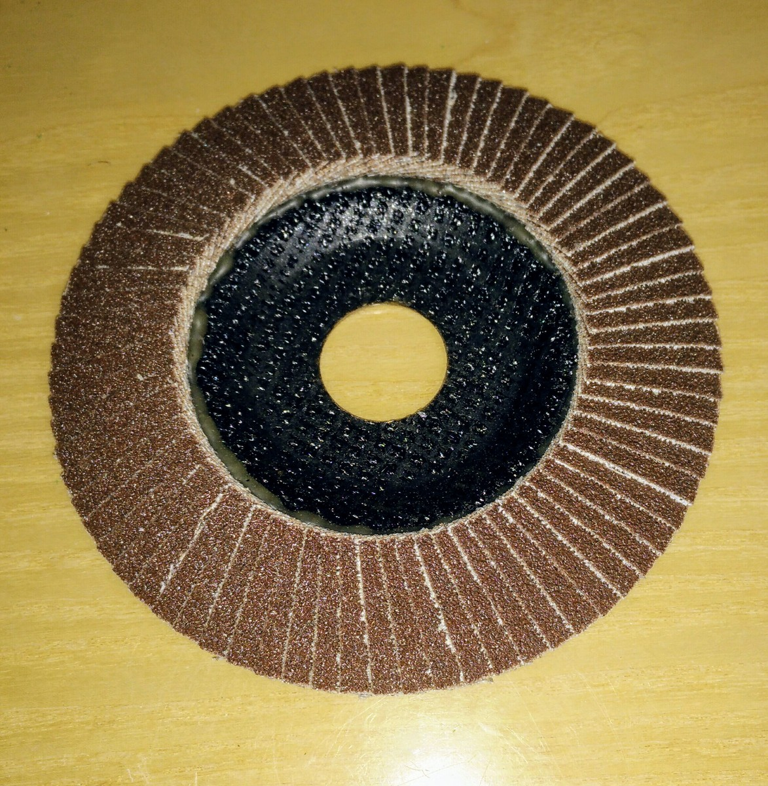
Batu Gerinda Asah & Potong
Roda asah tebal 6 mm (grinding disc), roda potong tipis 1,2 mm (cutting wheel), dan piringan amplas bertingkat (flap disc).
Prosedur Operasi Aman & Sudut Kontak Gerinda:
3.9 Mesin Bor Duduk (Drilling Machine) & Mesin Potong Pelat Mekanik
Tahap Memahami & Mengaplikasikan (Understand & Apply): Pembuatan lubang baut sambungan konstruksi baja dan pemotongan pelat lembaran dilakukan menggunakan mesin stasioner bengkel:

Mesin Bor Duduk (Bench Drill)
Spindel vertikal, meja kerja berpenjepit ragum bor, tuas pemakanan manual, dan puli transmisi pengatur kecepatan sabuk.
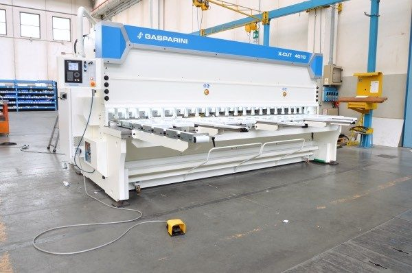
Mesin Potong Guillotine Shear
Pisau potong atas bergerak menekan pisau bawah tetap dengan sudut kemiringan geser untuk memotong pelat baja lurus tanpa terak.
Kalkulasi Kecepatan Putaran Mesin Bor (RPM):
Kecepatan putaran spindel bor dihitung berdasarkan diameter mata bor (d dalam mm) dan Kecepatan Potong (Cutting Speed / Cs material dalam meter/menit):
n = (1000 × Cs) / (π × d)
Untuk baja karbon rendah (St 37 / ASTM A36), nilai Cs = 20 s.d. 30 m/menit.
Contoh: Mata bor HSS diameter 10 mm pada baja lunak (Cs = 25 m/menit):
n = (1000 × 25) / (3,14 × 10) = 25000 / 31,4 ≈ 796 RPM (pilih tingkat puli terdekat ~800 RPM).
- Benda kerja WAJIB dicekam kuat pada ragum mesin bor (drill press vise) yang dibaut ke meja mesin. DILARANG MEMEGANG PELAT DENGAN TANGAN BEBAS (pelat dapat berputar liar melukai operator jika mata bor tersangkut).
- Dilarang memakai sarung tangan rajut/kain saat mengoperasikan mesin bor karena benang kain dapat tergulung ke spindel berputar.
- Gunakan cairan pendingin (coolant / dromus oil) untuk menjaga ketajaman bibir potong mata bor dan mencegah panas berlebih.
Rangkuman Pembelajaran Bab 3 (Deep Reflection)
- Pengukuran presisi adalah kunci fit-up sempurna: jangka sorong 0,05 mm dan mikrometer 0,01 mm memerlukan pembacaan teliti dan pencegahan kesalahan paralaks.
- Welding gauge berfungsi memverifikasi kepatuhan geometri rigi las terhadap WPS: sudut bevel 60°, tinggi crown max 3 mm, dan pencegahan undercut > 0,5 mm.
- Kikir bastard digunakan untuk pengikisan awal material dalam jumlah banyak, sedangkan kikir smooth untuk meratakan permukaan bidang secara presisi.
- Pemilihan gigi gergaji (TPI) harus menjamin sedikitnya 2–3 gigi selalu mencengkeram ketebalan penampang pelat logam kerja.
- Mesin gerinda dan bor duduk menuntut disiplin K3 mutlak: periksa batas RPM roda gerinda, gunakan pelindung wheel guard, dan selalu jepit benda kerja pada ragum bor.
🎯 Evaluasi Deep Learning: Kuis Formatif Bab 3
Kuis Interaktif4.1 Prinsip Fisika Busur Nyala Listrik SMAW
Tahap Memahami (Understand): Pengelasan busur elektroda terbungkus (Shielded Metal Arc Welding / SMAW atau Las Busur Manual MMAW) adalah proses penyambungan logam permanen dengan memanfaatkan energi panas busur nyala listrik untuk meleburkan logam induk (base metal) dan kawat inti elektroda (filler metal) secara bersamaan:
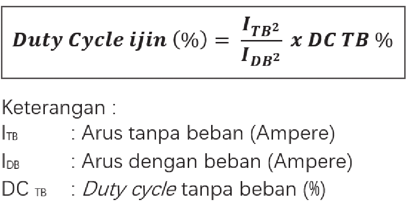
Peta Konsep Pengelasan SMAW
Korelasi parameter arus listrik, jenis fluks elektroda, pembentukan kawah cair, dan proteksi atmosferik terak.
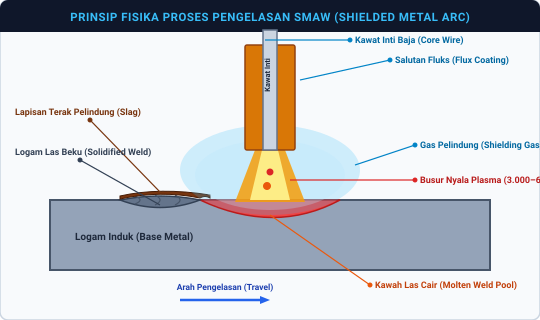
Fisika Pembentukan Busur Plasma
Kolom ion gas terionisasi pada suhu 3.000°C s.d. 6.000°C di antara ujung elektroda dan kolam logam cair.
Peran Ganda Salutan Fluks Elektroda:
Payung Gas Pelindung (Shielding Gas)
Fluks terbakar menghasilkan selimut gas pelindung (CO₂, CO, H₂) yang mengisolasi kawah las cair dari kontaminasi oksigen dan nitrogen udara bebas pembuat rapuh.
Lapisan Terak Pelindung (Slag Shield)
Senyawa oksida dan mineral mengapung di atas kawah las membentuk kerak (slag) yang memperlambat laju pendinginan logam agar tidak terbentuk struktur martensit keras getas.
4.2 Mesin Las SMAW Tipe Inverter & Efisiensi Duty Cycle
Tahap Memahami (Understand): Transformasi teknologi las dari mesin trafo transformator konvensional yang berat ke mesin elektronika daya IGBT Inverter (Insulated Gate Bipolar Transistor) merevolusi efisiensi energi bengkel fabrikasi modern:
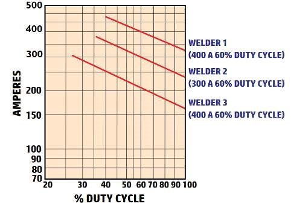
Panel Kendali Mesin Inverter
Digital display ampere, selektor hot-start, knob arc-force, dan proteksi kelebihan beban (overheat indicator LED).
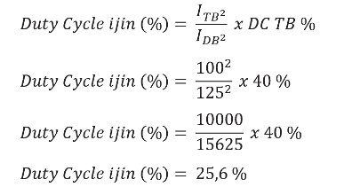
Grafik Siklus Kerja (Duty Cycle)
Kemampuan operasi mesin pada arus beban tertentu dalam siklus standar pengujian 10 menit tanpa memicu pemutus termal.
Kalkulasi Siklus Kerja (Duty Cycle Standard NEMA / IEC 60974-1):
Siklus kerja dinyatakan dalam persentase (%) waktu kerja aktif dalam durasi total 10 menit.
Contoh: Mesin las tertulis spesifikasi Duty Cycle 60% @ 160 Ampere. Artinya:
• Mesin mampu mengelas terus menerus pada arus 160 A selama 6 menit (60% × 10 menit).
• Mesin WAJIB diistirahatkan (kipas pendingin tetap menyala) selama 4 menit berikutnya agar trafo ferit tidak terbakar.
I₂ = I₁ × √(D₁ / D₂) = 160 × √(60 / 100) = 160 × 0,774 = 123,9 Ampere.
Maka pada arus 120 A mesin dapat bekerja 100% kontinu tanpa bahaya thermal trip.
4.3 Polaritas Pengelasan: DCEN, DCEP, dan Arus Bolak-Balik (AC)
Tahap Memahami (Understand): Pemilihan polaritas menentukan distribusi energi panas busur antara elektroda dan benda kerja, memengaruhi kedalaman penetrasi dan laju pencairan:
| Jenis Polaritas | Pemasangan Kabel Las | Distribusi Energi Panas | Karakteristik & Aplikasi Utama |
|---|---|---|---|
| DCEN (Direct Current Electrode Negative) Polaritas Lurus (Straight Polarity / DC-) |
• Tang Elektroda → Kutub (-) Negatif • Klem Massa → Kutub (+) Positif |
• Benda Kerja: 70% panas • Elektroda: 30% panas |
Penetrasi dalam dan laju deposisi kawat pengisi sedang. Sangat baik untuk pelat tebal baja karbon dan penembusan akar kampuh. |
| DCEP (Direct Current Electrode Positive) Polaritas Balik (Reverse Polarity / DC+) |
• Tang Elektroda → Kutub (+) Positif • Klem Massa → Kutub (-) Negatif |
• Elektroda: 70% panas • Benda Kerja: 30% panas |
Pencairan elektroda cepat, busur sangat stabil, dan pembersihan oksida katodik kuat. Wajib untuk elektroda Low-Hydrogen (E7018) dan pipa. |
| AC (Alternating Current) Arus Bolak-Balik |
Kutub bergantian positif & negatif 50 Hz/60 Hz secara periodik. | • Seimbang (50% Elektroda : 50% Benda Kerja) | Mencegah fenomena tiupan busur magnetik (Magnetic Arc Blow) yang kerap terjadi saat mengelas sudut dalam atau benda bermedan magnet. |
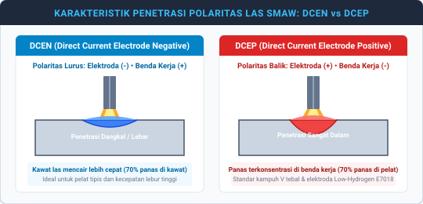
4.4 Klasifikasi Elektroda Terbungkus AWS A5.1 & Jenis Salutan
Tahap Memahami (Understand): American Welding Society (AWS) menetapkan tata nama standar internasional untuk elektroda las baja karbon rendah melalui spesifikasi AWS A5.1:
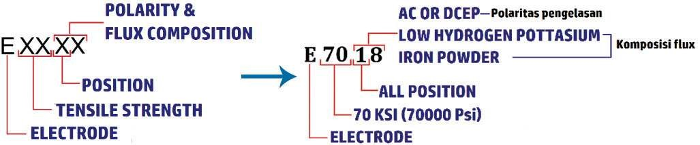
Kodefikasi Standar AWS E7018
Setiap huruf dan angka mencerminkan kekuatan mekanik, fleksibilitas posisi, dan senyawa kimia fluks.
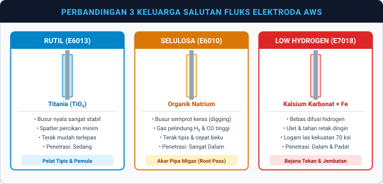
Keluarga Salutan Fluks Las
Salutan Rutil (Titania), Selulosa (Cellulose), dan Rendah Hidrogen (Low Hydrogen Iron Powder).
Tiga Kelompok Utama Elektroda Industri:
Tipe Rutile (E6013)
Salutan kalium titania. Busur api sangat halus, terak sangat mudah mengelupas sendiri, penetrasi sedang, sedikit spatter. Pilihan nomor satu untuk latihan pemula dan pelat bodi tipis.
Tipe Low Hydrogen (E7016 & E7018)
Salutan kalium kalsium karbonat + serbuk besi. Menghasilkan logam las sangat ulet, bebas difusi hidrogen, tahan retak dingin. Standar bejana tekan, jembatan, dan struktur gempa.
Tipe Selulosa (E6010)
Salutan natrium selulosa organik tinggi. Busur menyembur keras (digging arc), penetrasi luar biasa dalam. Khusus pengelasan pipa saluran minyak bumi (piping root pass).
4.5 Penanganan, Penyimpanan Elektroda & Manajemen Hidrogen
Tahap Memahami & Mengaplikasikan (Understand & Apply): Kelembaban udara (H₂O) adalah musuh terbesar elektroda baja berkekuatan tinggi. Air yang terserap fluks akan terurai menjadi gas hidrogen di temperatur busur las:
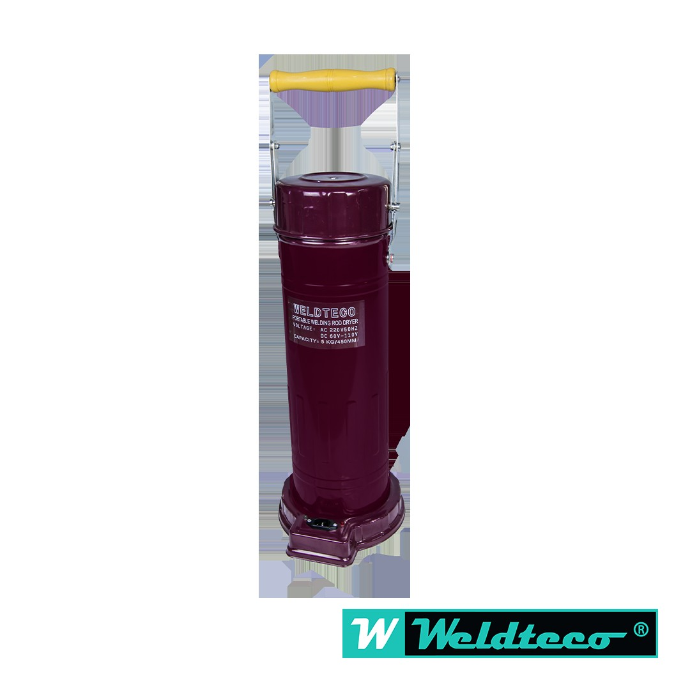
Oven Pemanas Stasioner (Baking Oven)
Oven pemanggang suhu tinggi 300°C s.d. 350°C untuk meregenerasi elektroda Low Hydrogen yang terpapar udara lembab.
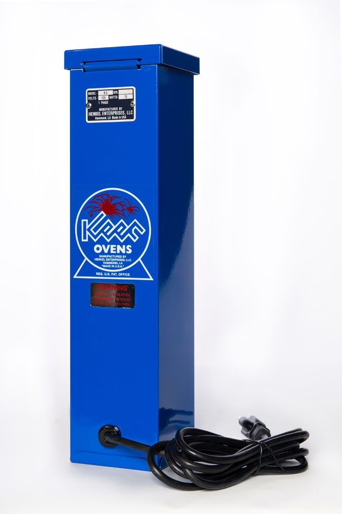
Termos Pemanas Portabel (Quiver)
Termos pemanas 70°C s.d. 100°C dibawa juru las langsung ke bilik las untuk menjaga elektroda tetap kering saat proses pengerjaan.
Regulasi Termal Elektroda Rendah Hidrogen (AWS D1.1):
| Tahapan Perlakuan Panas | Temperatur Operasi | Durasi Waktu | Keterangan Operasional |
|---|---|---|---|
| Penyimpanan Segel Utuh | Suhu ruang 20°C - 25°C, RH < 50% | Sesuai masa simpan pabrik | Kardus dilapisi aluminium foil tertutup rapat di atas palet kayu. |
| Re-baking (Pemanggangan) | 300°C s.d. 350°C | 1 s.d. 2 Jam | Wajib dilakukan jika kemasan telah terbuka > 4 jam di atmosfer bengkel terbuka. |
| Holding Oven (Penyimpanan) | 120°C s.d. 150°C | Kontinu setelah baking | Menjaga elektroda siap pakai tanpa menyerap kembali molekul uap air. |
| Portable Quiver (Bilik Las) | 70°C s.d. 100°C | Maksimal 4 jam di lapangan | Sisa elektroda yang tidak terpakai setelah 4 jam wajib dipanggang ulang (maksimal 1x re-bake). |
4.6 Simulator Interaktif: AWS Electrode Decoder
Tahap Mengaplikasikan (Apply): Klik jenis kawat las di bawah ini untuk melihat bedah makna setiap karakter kode AWS A5.1 secara visual dan interaktif:
⚡ AWS A5.1 Carbon Steel Decoder
InteraktifAWS A5.1 E6013 (Tipe Rutile / RB-26)
Kekuatan Tarik: 60.000 psi (420 MPa) Kuat Tarik Minimum
Posisi Pengelasan: 1 = Semua Posisi (All Position: Flat, Horizontal, Vertical Up/Down, Overhead)
Karakteristik Salutan (Fluks): 3 = Salutan Kalium Titania (Rutil). Busur halus, penetrasi sedang, terak mudah lepas, cocok untuk pelat tipis dan baja karbon struktural.
Polaritas Listrik: AC, DCEN (DC-), atau DCEP (DC+)
4.7 Penyiapan Sambungan (Joint Fit-up), Kampuh V, & Las Cantum (Tack Weld)
Tahap Memahami & Mengaplikasikan (Understand & Apply): Kualitas sambungan las tumpul (butt joint) pada pelat baja dengan ketebalan > 6 mm memerlukan persiapan kampuh (groove) untuk menjamin penembusan penuh hingga ke akar:
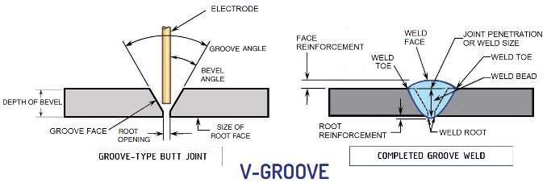
Anatomi Kampuh V Tunggal (Single V-Groove)
Sudut bevel (30°), sudut alur total (60°), bidang akar (root face 1,5 mm), dan celah akar (root gap 2 mm).
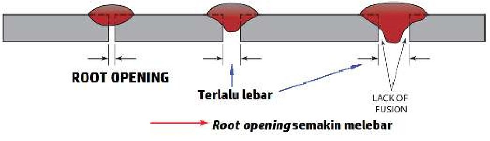
Standar Las Cantum (Tack Weld AWS D1.1)
Las cantum pendek sepanjang 15–20 mm di kedua ujung pelat untuk menjaga kestabilan celah akar saat dilas.
Dimensi Kritis Kampuh V Tunggal Pelat Tebal 8–10 mm:
- Sudut Kemiringan Bevel (Bevel Angle): 30° pada masing-masing tepi pelat (total Included Angle = 60°).
- Bidang Akar (Root Face): 1,5 mm s.d. 2,0 mm. Mencegah terjadinya jebol leleh (burn-through) saat elektroda melintas.
- Celah Akar (Root Opening / Gap): 2,0 mm s.d. 2,5 mm (disesuaikan dengan diameter kawat inti elektroda root pass).
4.8 Lima Parameter Kunci Kualitas Las SMAW (The 5 Essentials)
Tahap Memahami (Understand): Keberhasilan menghasilkan sambungan las bebas cacat dengan tampilan rigi las seragam bergantung pada keselarasan lima variabel kunci:
Kuat Arus Tepat (Correct Amperage)
Arus menentukan panas kawah las. Terlalu tinggi = undercut & spatter; terlalu rendah = lack of fusion & elektroda mudah menempel.
Panjang Busur Tepat (Correct Arc Length)
Jarak ideal ujung inti kawat ke permukaan kawah las = 1× diameter inti elektroda (±2,5–3 mm). Terlalu jauh = porositas & percikan kasar.
Kecepatan Jalan (Correct Travel Speed)
Kecepatan stabil menghasilkan lebar rigi las 1,5 hingga 2,5 kali diameter inti kawat. Terlalu cepat = rigi tipis tanpa penetrasi; terlalu lambat = penumpukan logam berlebih.
Sudut Elektroda (Correct Angle)
Sudut jalan (travel angle) diarahkan 70° s.d. 80° condong menarik busur; sudut kerja (work angle) tegak 90° simetris terhadap celah sambungan.
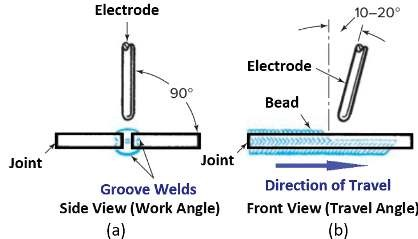
Sudut Tarik Elektroda (Dragging Angle)
Kemiringan 70° mendorong terak cair tetap tertinggal di belakang kawah las tanpa mendahului busur.
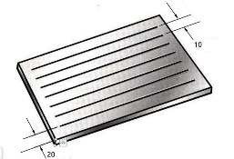
Rigi Las Sempurna (Uniform Bead)
Rigi bersisik rapat, tinggi mahkota 2 mm seragam, dan bebas cekungan undercut di sepanjang jalur las.
4.9 Virtual Arc Lab: Simulator Busur Pengelasan Virtual
Tahap Mengaplikasikan (Apply): Uji coba kombinasi arus, panjang busur, dan kecepatan jalan secara real-time pada simulator busur virtual di bawah ini:
🔥 Laboratorium Busur Virtual SMAW
Simulasi DinamisPenetrasi sambungan matang (2/3 tebal pelat), rigi las seragam tanpa undercut, dan terak mudah dibersihkan.
4.10 Prosedur & Teknik Pengelasan Posisi 1F (Fillet) dan 1G (Groove)
Tahap Mengaplikasikan (Apply): Posisi 1F dan 1G adalah kompetensi inti dasar sebelum melangkah ke posisi horizontal (2F/2G), vertikal (3F/3G), dan di atas kepala (4F/4G):
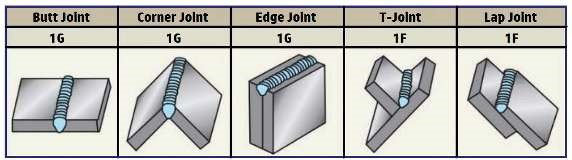
Posisi Pengelasan 1F dan 1G
1F = Sambungan sudut di mana sumbu las mendatar. 1G = Sambungan tumpul mendatar di atas meja datar.
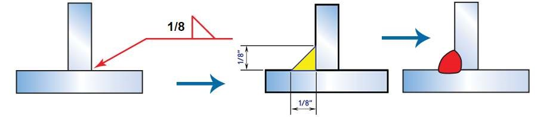
Sambungan Sudut T-Joint Multi-Layer
Pengelasan berlapis (root pass, filler layer, capping) dengan pembersihan terak di setiap lapis.
Langkah Kerja Prosedural Pengelasan 1F Sambungan T:
4.11 Inspeksi Visual ISO 17637 & Kartu Diagnostik 3D Cacat Las
Tahap Merefleksi (Reflect): Setiap juru las wajib memiliki kecakapan diagnostik. Sentuh/arahkan kursor pada kartu di bawah ini untuk membalik dan melihat penyebab serta solusinya:
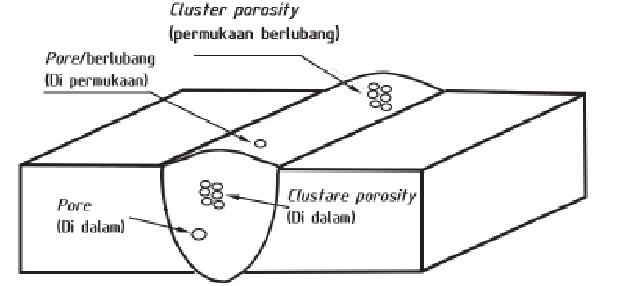
Porositas (Porosity)
Rongga-rongga gas terjebak di dalam atau permukaan rigi las.
↺ Klik/Sentuh untuk Membalik🔍 Diagnosis Porositas:
Penyebab: Elektroda lembab mengandung air, busur las terlalu panjang sehingga gas pelindung pecah, atau pelat berminyak/berkarat.
Solusi: Keringkan elektroda dalam oven 150°C, jaga jarak busur sedekat 2 mm, dan bersihkan pelat sebelum mengelas.
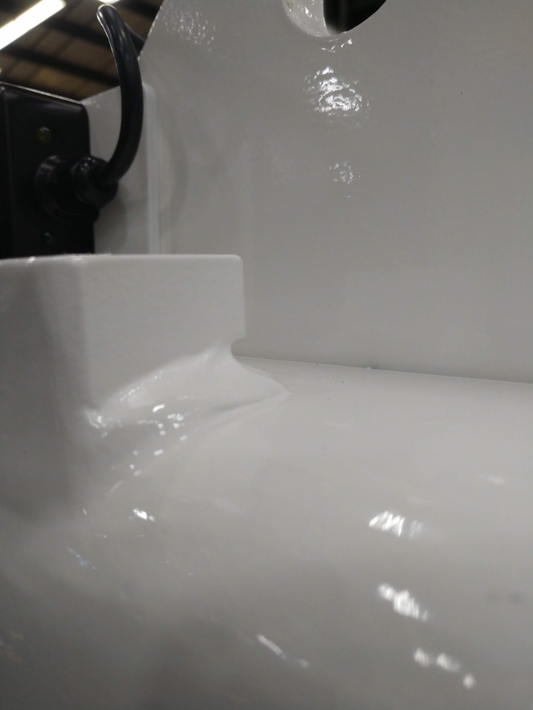
Undercut (Parit Termakan)
Alur parit tajam di kaki jalur las pada logam induk.
↺ Klik/Sentuh untuk Membalik🔍 Diagnosis Undercut:
Penyebab: Kuat arus (ampere) terlalu tinggi, sudut ayunan elektroda terlalu lama diam di tepi, atau kecepatan jalan berlebih.
Solusi: Turunkan ampere sesuai standar tabel diameter elektroda dan atur kecepatan jalan stabil.
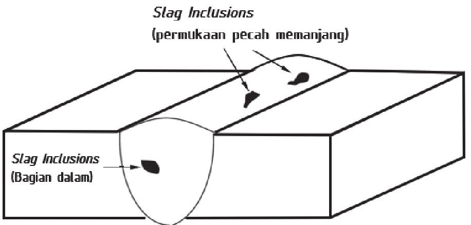
Inklusi Terak (Slag Inclusion)
Kerak terak padat terperangkap di dalam jalur las.
↺ Klik/Sentuh untuk Membalik🔍 Diagnosis Inklusi Terak:
Penyebab: Terak jalur pertama tidak dibersihkan saat menimpa jalur kedua, atau sudut elektroda salah sehingga terak mendahului busur.
Solusi: Bersihkan terak dengan palu terak dan sikat baja hingga bersih mengkilap sebelum menimpa jalur berikutnya.
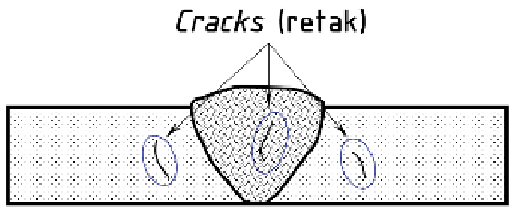
Retak Las (Crack / HICC)
Cacat fatal paling berbahaya yang memicu patah getas seketika.
↺ Klik/Sentuh untuk Membalik🔍 Diagnosis Retak:
Penyebab: Difusi hidrogen tinggi, pendinginan terlalu cepat pada baja berkekuatan tinggi, atau tegangan klem berlebih.
Solusi: Lakukan pemanasan awal (preheating 100°C–150°C) dan gunakan elektroda low hydrogen berkondisi kering mutlak.
Rangkuman Pembelajaran Bab 4 (Deep Reflection)
- Busur nyala SMAW mencapai 6000°C; fluks elektroda berfungsi ganda menciptakan atmosfer gas pelindung dan terak penahan pendinginan cepat.
- Duty cycle mesin inverter menentukan batas operasi aman tanpa overheating; kalkulasi siklus 10 menit wajib dipatuhi.
- Polaritas DCEN menghasilkan penetrasi dalam pada benda kerja; polaritas DCEP menghasilkan stabilitas busur tinggi untuk elektroda khusus Low Hydrogen.
- Kode AWS A5.1 mencerminkan kekuatan tarik (E60/E70 ksi), kemampuan semua posisi (1), dan formulasi kimia salutan fluks.
- Elektroda Low Hydrogen wajib dipanggang dalam oven 300°C–350°C dan disimpan pada portable quiver 70°C–100°C guna mencegah cacat retak dingin (HICC).
- Pengendalian 5 parameter kunci (Ampere, Busur, Speed, Sudut, Elektroda) menjamin rigi las seragam bebas dari cacat porositas, undercut, dan inklusi terak.
🎯 Evaluasi Deep Learning: Kuis Formatif Bab 4
Kuis Interaktif5.1 Lanskap Industri Pengelasan & Fabrikasi Logam Modern
Tahap Memahami (Understand): Pengelasan dan fabrikasi logam adalah "tulang punggung peradaban industri modern". Lebih dari 70% produk rekayasa di dunia dibuat dengan proses pengelasan dan penyambungan logam:
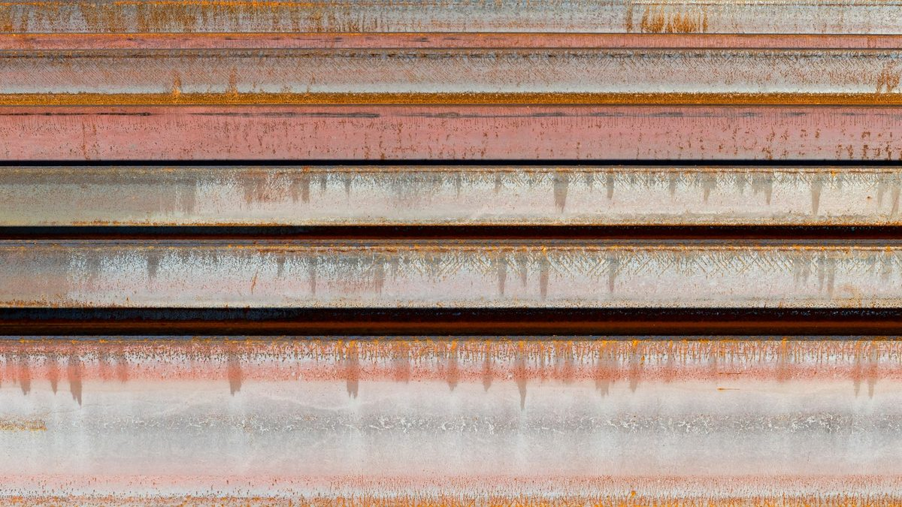
Konstruksi Rangka Baja Berat
Jembatan bentang panjang, gedung pencakar langit, menara transmisi tegangan tinggi, dan struktur stadion raksasa.
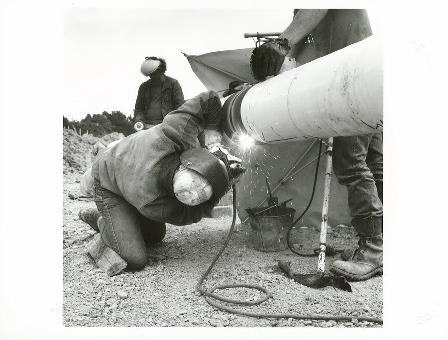
Sektor Migas & Anjungan Lepas Pantai
Pipa penyalur bertekanan tinggi (high-pressure pipelines), bejana tekan (pressure vessel), tangki LNG, dan kilang minyak bumi.
Lima Sektor Industri Penyerap Utama Tenaga Juru Las:
Sektor Migas & Petrokimia
Menuntut pengelasan mutu tertinggi berstandar ASME Section IX dan API 1104 untuk menahan fluida korosif bertekanan ratusan bar.
Industri Galangan Kapal (Shipyard)
Penyambungan lambung kapal kargo, tanker, dan kapal perang berstandar biro klasifikasi internasional (BKI, DNV, Lloyd's Register).
Manufaktur Otomotif & Kereta Api
Fabrikasi sasis truk, gerbong kereta penumpang/barang PT INKA, dan perakitan rangka kendaraan bertenaga listrik.
Pembangkit Listrik (Power Plant)
Fabrikasi boiler uap superkritis, turbin pembangkit, saluran penstock PLTA, dan struktur reaktor berketahanan panas tinggi.
5.2 Otomasi Pengelasan: Mesin Orbital & Lengan Robot 6-Axis
Tahap Memahami (Understand): Perkembangan manufaktur cerdas (Smart Manufacturing) mengintegrasikan kecerdasan buatan dan mekatronika dalam sistem pengelasan modern:
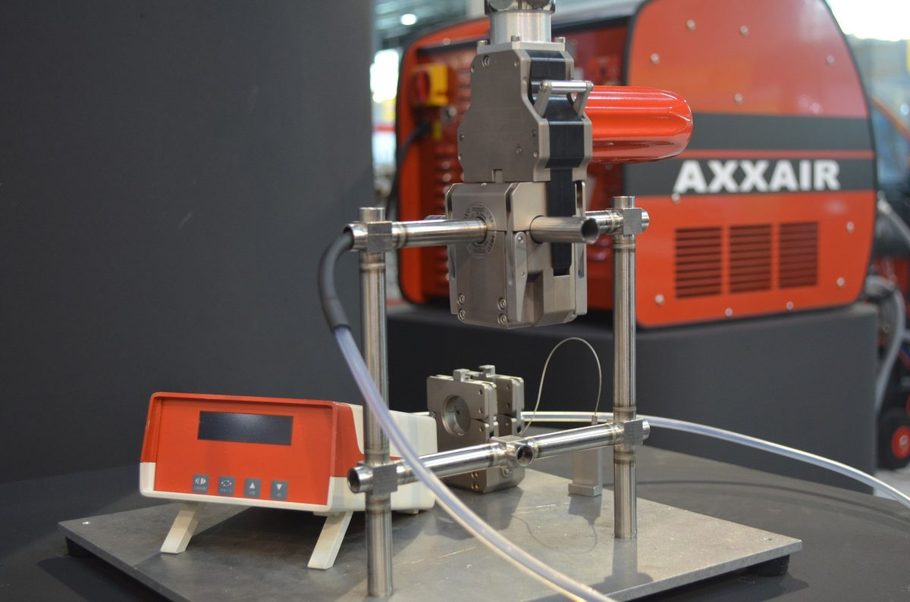
Pengelasan Orbital Otomatis (Orbital Pipe Welding)
Kepala las mekanik bergerak mengorbit 360° secara presisi pada sambungan pipa migas dan farmasi dengan program komputer.
Lengan Robot Pengelasan 6-Axis
Robot industri berkecepatan tinggi dengan sensor pelacak jalur laser (seam tracking sensor) untuk pengelasan massal konsisten.
Transformasi Peran Juru Las di Era Industri 4.0:
Hadirnya robotika tidak menghapus kebutuhan juru las, melainkan mentransformasi kompetensinya dari operator manual menjadi Robot Welding Programmer & Welding Technologist:
5.3 Standar Kompetensi Nasional (SKKNI) & Jenjang Karir Welder
Tahap Memahami & Mengaplikasikan (Understand & Apply): Di Indonesia, kualifikasi tenaga kerja fabrikasi diatur oleh Badan Nasional Sertifikasi Profesi (BNSP) mengacu pada SKKNI:
Level 1: Welder Pelat Tingkat Dasar (1G / 2G / 1F / 2F)
Mampu mengelas sambungan pelat posisi mendatar dan horizontal pada konstruksi umum bengkel dan tralis.
Level 2: Welder Konstruksi Struktural (3G / 4G Pelat)
Menguasai posisi vertikal naik (vertical up) dan di atas kepala (overhead) pada jembatan dan struktur baja berat.
Level 3: Welder Pipa Tekanan Tinggi (5G / 6G Pipe Welder)
Kualifikasi elit pengelasan pipa miring 45° statis untuk industri migas, geotermal, dan kilang lepas pantai (Offshore).
Level 4: Inspektur Las Bersertifikat (Welding Inspector)
Menguji dan mengesahkan kualitas hasil las secara visual (VT) dan uji tak merusak (NDT: UT, RT, MT, PT).
Level 5: Welding Engineer & Manajer Pabrik Fabrikasi
Merancang Prosedur Las (WPS / PQR), kalkulasi biaya struktur, dan memimpin divisi fabrikasi industri global.
Uji Sertifikasi BNSP di LSP
Pengujian spesimen pelat/pipa disaksikan asesor independen bersertifikasi resmi negara.
Inspeksi Hasil Uji Las (NDT)
Pemeriksaan hasil las bebas cacat menggunakan sinar-X radiografi dan gelombang ultrasonik.
5.4 Technopreneurship Fabrikasi Logam & Business Model Canvas (BMC)
Tahap Mengaplikasikan (Apply): Lulusan SMK TFLM tidak hanya disiapkan sebagai pekerja industri, tetapi juga sebagai wirausahawan teknologi (technopreneur) tangguh yang membuka lapangan kerja:
Usaha Bengkel Fabrikasi Mandiri
Peluang pembuatan kanopi baja ringan, pagar tralis artistik, kontainer modifikasi, dan perabot industri estetis.
Kalkulasi Biaya & Penawaran Harga
Perhitungan Bill of Materials (BOM), estimasi kawat las per meter jalur, dan margin keuntungan wirausaha.
Kerangka Business Model Canvas (BMC) Bengkel Las Modern:
| Elemen BMC | Penerapan Nyata di Bidang Fabrikasi Logam |
|---|---|
| Value Proposition (Nilai Keunggulan) | Hasil las rapi standar industri, garansi kekuatan struktur 5 tahun, pengerjaan tepat waktu dengan 3D visual preview. |
| Customer Segments (Target Pasar) | Pemilik hunian perumahan, kontraktor konstruksi ruko/gudang, UMKM pengolahan makanan (tangki stainless), dan instansi pemerintah. |
| Channels (Saluran Pemasaran) | Portofolio media sosial Instagram/TikTok, website resmi bengkel, Google Maps Business, dan rekomendasi kepuasan pelanggan. |
| Revenue Streams (Arus Pendapatan) | Jasa fabrikasi rangka kanopi & pagar, reparasi alat berat pertanian/konstruksi, dan pembuatan produk custom kreatif. |
5.5 Siklus Proyek Nyata: Pembelajaran Berbasis Proyek (Project-Based Learning)
Tahap Mengaplikasikan & Merefleksi (Apply & Reflect): Integrasi seluruh materi dari Bab 1 hingga Bab 5 diaplikasikan dalam tugas proyek pembuatan Meja Kerja Las Rangka Baja (Welding Table Workbench) di bengkel SMK Negeri 2 Depok:
Perakitan Rangka Meja Las
Penyikuan rangka balok hollow baja dengan klem sudut siku dan pemeriksaan kelurusan diagonal bidang.
Inspeksi & Finishing Cat Primer
Pembersihan terak las, uji visual cacat permukaan, penghalusan tepi dengan flap disc, dan pelapisan cat zink kromat.
Tahapan Alur Proyek Terpadu (PBL Deep Learning):
Rangkuman Pembelajaran Bab 5 (Refleksi Masa Depan Karir)
- Pengelasan dan fabrikasi logam menopang sektor-sektor vital bangsa: migas, konstruksi jembatan, perkapalan maritim, dan ketenagalistrikan.
- Era Industri 4.0 mengintegrasikan pengelasan orbital terprogram dan robot lengan 6-axis berteknologi sensor pemantau laser real-time.
- Jenjang sertifikasi BNSP berjenjang dari juru las pelat dasar hingga welding inspector internasional (CSWIP/IWE) menjanjikan jenjang karir global.
- Jiwa technopreneurship membekali teknisi muda untuk merintis wirausaha bengkel fabrikasi mandiri dengan kerangka Business Model Canvas (BMC).
- Pembelajaran berbasis proyek (PBL) mengkristalkan kompetensi teknis, kedisiplinan budaya industri 5R, dan etika tanggung jawab profesional.
🎯 Evaluasi Deep Learning: Kuis Formatif Bab 5
Kuis InteraktifSertifikat Digital Penyelesaian Modul TFLM
Tahap Merefleksi (Reflect): Selamat atas ketekunan Anda menyelesaikan pembelajaran Fase E Dasar-Dasar Teknik Fabrikasi Logam dan Manufaktur berbasis Pendekatan Deep Learning. Terbitkan sertifikat digital resmi Anda di bawah ini:
SMK NEGERI 2 DEPOK SLEMAN
SERTIFIKAT KELULUSAN PEMBELAJARAN DEEP LEARNING
Telah menyelesaikan seluruh rangkaian siklus pembelajaran mandiri (Mindful, Meaningful, & Joyful Learning), simulasi virtual, serta evaluasi formatif dalam modul ajar digital:
Dasar-Dasar Teknik Pengelasan & Fabrikasi Logam (Fase E SMK)
Glosarium Komprehensif Fabrikasi Logam & Pengelasan (A - Z)
| Istilah Teknis | Definisi Baku Standar Internasional |
|---|---|
| Arc Eye | Fotokeratitis akut (radang kornea mata) akibat paparan langsung sinar ultraviolet (UV) busur las tanpa kacamata/helm filter pelindung. |
| Back Gouging | Pembersihan akar las pada sisi sebalik sambungan tumpul untuk memastikan penembusan perpaduan logam sempurna 100%. |
| Bevel Angle | Sudut olahan kemiringan sisi tepi pelat logam sebelum disambung membentuk alur kampuh (umumnya 30° per sisi pelat). |
| Crater | Cekungan kawah logam las di titik akhir penghentian busur listrik yang rawan mengalami retak susut bila tidak diisi penuh. |
| Duty Cycle | Persentase durasi kerja aman mesin las dalam interval uji standar 10 menit tanpa menimbulkan kelebihan panas (overheat). |
| Fit-Up | Kerapatan dan keselarasan posisi perakitan bagian-bagian benda kerja sebelum dilakukan pengelasan permanen. |
| Heat Affected Zone (HAZ) | Zona logam dasar yang tidak melebur namun mengalami perubahan struktur mikro kristal dan sifat mekanik akibat siklus panas pengelasan. |
| Porosity | Cacat rongga-rongga udara/gas yang terjebak di dalam logam las akibat hilangnya payung gas pelindung fluks saat pembekuan kawah. |
| Slag Inclusion | Cacat terak oksida fluks yang tidak sempat mengapung dan terperangkap padat di dalam jalur endapan logam las. |
| Tack Weld | Las cantum pendek yang berfungsi mengikat sementara posisi komponen struktur fabrikasi sebelum pengelasan utama dilakukan. |
| Undercut | Parit lekukan termakan pada logam induk di sepanjang kaki rigi las yang mengurangi ketebalan efektif penampang pelat. |
Daftar Pustaka & Rujukan Standar:
- American Welding Society (AWS). (2020). AWS D1.1/D1.1M: Structural Welding Code - Steel. Miami: AWS.
- AWS. (2015). AWS A5.1/A5.1M: Specification for Carbon Steel Electrodes for Shielded Metal Arc Welding. Miami: AWS.
- International Organization for Standardization. (2018). ISO 17637: Non-destructive testing of welds - Visual testing of fusion-welded joints. Geneva: ISO.
- Kemendikbudristek RI. (2022). Dasar-Dasar Teknik Pengelasan dan Fabrikasi Logam - Fase E. Jakarta: Pusat Perbukuan.
- Badan Nasional Sertifikasi Profesi (BNSP). (2019). Standar Kompetensi Kerja Nasional Indonesia (SKKNI) Bidang Pengelasan. Jakarta: BNSP.
Hak Cipta © 2026 SMK Negeri 2 Depok Sleman, D.I. Yogyakarta.
Dikembangkan dengan Dedikasi untuk Memajukan Pendidikan Vokasi Manufaktur Indonesia.